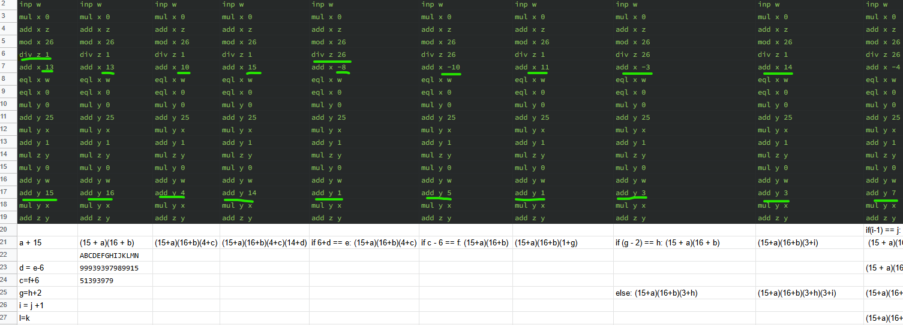

Module advent_of_code_2021::day_24 [−][src]
Expand description
This is my solution for Advent of Code - Day 24 - Arithmetic Logic Unit
Today was a challenge of interpreting an assembly language adjacent program and working out the underlying logic
about which inputs it accepts or rejects. Looking through the puzzle data it seemed like a lot of statements were
no-ops so I first wondered if the puzzle was just to factor out the redundant commands and brute0force it, but after
a bit of trying to write a parser that would reduce the program to just the key bits in calculating the final z
value. This was a bit of a dead end, but did clue me into the repeating nature of the input. The no-op
operations we’re repeated later on, but in the later context they did do something. Also I had written parse_input
and Instruction::from, and Param and OpType to have a structured representation of the commands.
At this point I was working things out in a rather disorganised spreadsheet Sheet 1 is me stepping through the logic. Copy of sheet 1 shows the program split into its repeating sections.

The MONAD program is a loop that repeats the same 18 lines, with a few variable values. Here is a walk through of my first 18 line section:
1. inp w | Read the next input into `w`
2. mul x 0 | Reset `x` to 0
3. add x z | Copy z into x
4. mod x 26 | z is treated like a stack of base 26 numbers, this mod sets
| `x` to the top of the stack
5. div z 1 | The number here is always 1 or 26. `z / 1` is a no-op,
| `z / 26` pops the `prev` number from the top of the `z`
| stack.
6. add x 13 | The number here is variable per section, I'll call it `n`.
| This is adding `n` to `prev`.
7. eql x w | `1` if `prev` + `n` == `inout` (`w` is the latest digit
| input.)
8. eql x 0 | This is inverting line 7 so `prev` + `n` != `input`
9. mul y 0 | Reset `y` to 0
10. add y 25 | Set `y` to 25
11. mul y x | `x` is 1 if the modified previous stack value != `input`, 0
| otherwise. So `y` is now either `0` or `25` based on the
| same condition.
12. add y 1 | `y` is now either 1 or 26 based on the same condition.
13. mul z y | If `y` is 1, then this is a no-op otherwise this is shifting
| 0 onto the top of the `z` stack
14. mul y 0 | Reset `y` to 0 again
15. add y w | Copy the input into `y`
16. add y 15 | The literal here varies, I'll call it `p`.
17. mul y x | Same idea as line 11, if `prev` + `n` != `input` this is a
| no-op, if `prev` + `n` == `input` y is now 0.
18. add z y | If `y` is still non-zero, update the 0 we pushed onto the
| stack to be `input` + `p`.So written as rust code this could be seen as:
fn section(input: isize, z: &mut Vec<isize>, pop: bool, n: isize, p: isize) {
let x = z.last().unwrap() + n;
if pop {z.pop()};
if input != x {
z.push(input + p);
};
}It is also worth noting that as input is in the range 1 - 9. So for some of the inputs it is guaranteed
that they’ll be pushed onto the stack regardless of input. I stepped through the whole 14 sections by hand and
worked out that for z to be 0 (i.e. the stack is empty) each time prev + n could equal the input, it had to
match as the guaranteed pop operations matched the count of the guaranteed pushes, so each time it was possible
not to push we had to take it, or numbers would be left on the stack. This gave me the criteria for the valid
numbers. I made some human errors stepping through the constraints so the number I worked out failed, but since
this is a coding problem I should eliminate that by coding the analysis instead. analyse_program does just
that. Working out the maximum valid model number (part one), and then part two (the minimum) was a minor
modification.
Overall, whilst there is some satisfaction in having worked out what was going on, I was not a fan of today’s puzzle. The answer was in deduction, so examples that actually helped a solver would have given the game away. This meant the usual plan of build some tests from the example as a guide doesn’t apply and makes the whole experience more frustrating when it doesn’t work (as it didn’t for me when stepping through by hand). The only feedback is that your answer is wrong, but you also can’t go looking for hints as to why, as that gives the whole game away.
Enums
Encode each line as either a read from input, or an operation
Whilst there are six instructions the Inp is different enough from the others that it is easier to split it out.
This then encodes the type of the remaining five op codes.
Represents a operation’s parameter(s) as either one of the four memory addresses or a literal number
Functions
First split the program into its 18-line sections. For each extract the three variables. Tracking what input + p values are on the stack, and where it is possible to avoid pushing to the stack, storing that as a condition.
Then iterate through these conditions working out where parts of the input are constrained by them and updating the
minimum and maximum numbers as appropriate. Finally return this minimum (part two) and maximum (part one).
Parse each line of the puzzle input program return with Instruction::from, return the program as a list fo
instructions.
The entry point for running the solutions with the ‘real’ puzzle input.